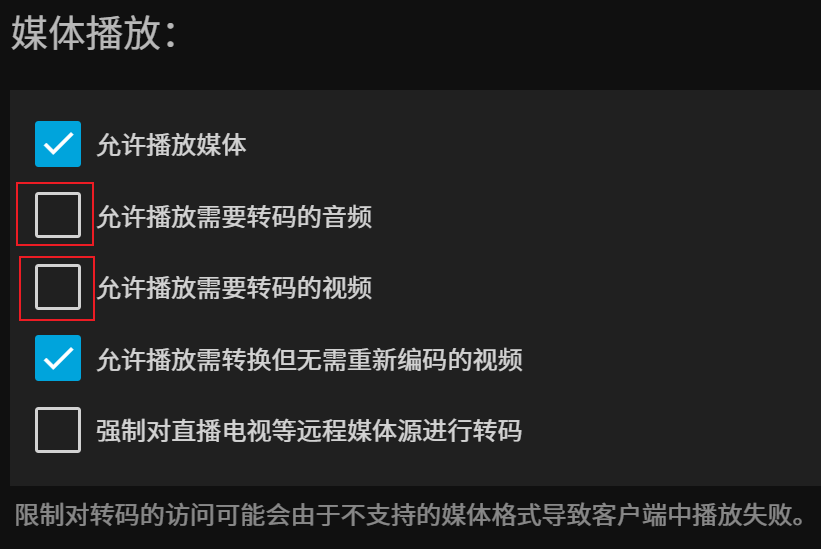
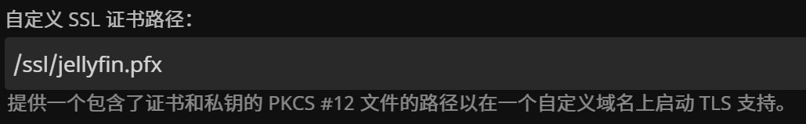
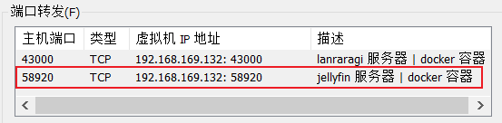
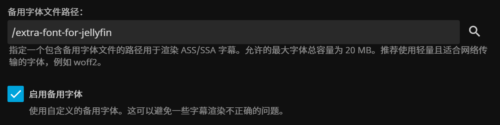
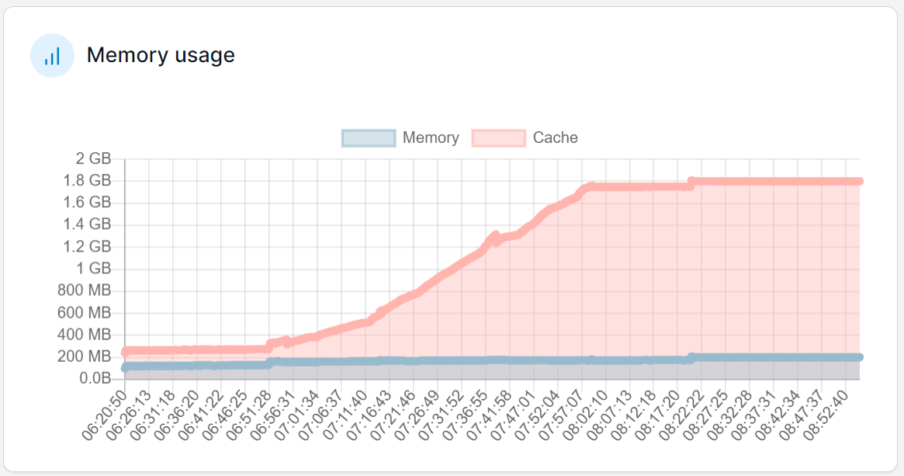

Install Jellyfin in Docker
Preface
Jellyfin is an open-source media server. Here is my way of using Jellyfin: download anime using qBittorrent, start Jellyfin, and then watch the anime on iPad through the client.
Previously, I have installed the portable version of Jellyfin on Windows because a Linux virtual machine can not utilize the graphics card for hardware transcoding. However, I discovered that the Android and iOS clients support most codecs, eliminating the need for server-side transcoding. Since I am already familiar with Jellyfin’s usage and configuration, I decided to migrate it to Docker.
Although Jellyfin itself is cross-platform, its configuration is still OS-dependent, especially when moving from Windows to Docker. Despite the availability of a third-party script, I chose to reconfigure it for safety, which does not require much effort.
This article mainly talks about how to install Jellyfin using Docker, along with any issues encountered and their solutions.
Install Jellyfin
Firstly, create two volumes:
1 | docker volume create jellyfin-config |
Docker Compose:
1 | version: '3' |
-
Specify the image version;
10.8.13is the latest stable version, and subsequent versions have the termunstable, so it’s best not to uselatest. -
8096is the default HTTP port, and8920is the default HTTPS port. -
Jellyfin uses the following paths to store data:
Directory Description Path Data Directory Stores all Jellyfin data, usually referenced by other directories Specified by ENV JELLYFIN_DATA_DIRConfiguration Directory Stores configuration files Specified by ENV JELLYFIN_CONFIG_DIR; if not specified, it uses<Data Directory>/configCache Directory Stores server cache Specified by ENV JELLYFIN_CACHE_DIR; if not specified, it uses<Data Directory>/cacheLog Directory Stores log files Specified by ENV JELLYFIN_LOG_DIR; if not specified, it uses<Data Directory>/logThese environment variables are specified in the Dockerfile：
1
ENV DOTNET_SYSTEM_GLOBALIZATION_INVARIANT=1 LC_ALL=en_US.UTF-8 LANG=en_US.UTF-8 LANGUAGE=en_US:en JELLYFIN_DATA_DIR=/config JELLYFIN_CACHE_DIR=/cache JELLYFIN_CONFIG_DIR=/config/config JELLYFIN_LOG_DIR=/config/log JELLYFIN_WEB_DIR=/jellyfin/jellyfin-web JELLYFIN_FFMPEG=/usr/lib/jellyfin-ffmpeg/ffmpeg
Therefore,
/configand/cachecontain all data of the Jellyfin server, and these directories are mounted tojellyfin-configandjellyfin-cache, respectively. -
/mnt/hgfs/jellyfin-media:/media:ro: Mount media files from the local machine into Docker, the path can be arbitrary. -
/opt/docker/jellyfin_ssl/jellyfin.pfx: Used to configure the SSL certificate for the server, which will be discussed later. -
TZ=Asia/Shanghai: Set the time zone to make the log time consistent with the local machine.
Jellyfin Configuration
Since it’s a fresh installation, all configurations need to be set up again. Here are some key points.
Server | Users
Disable transcoding: Even if the client doesn’t support the codec, server-side software decoding is not allowed, as it can lead to high pressure on the system.
Remove the following two options for each user:

For the option ‘Allow video playback that requires conversion without re-encoding’, many articles recommend disabling it, but it seems to have no impact, so it can be left enabled.
Advanced | Networking
Select the mounted jellyfin.pfx file as the SSL certificate (how to generate this file is explained later):

Check ‘Enable HTTPS’ and restart the container.
There’s no need to enable ‘Force HTTPS’ because the firewall will only allow devices on the local network to access the HTTPS port; the local machine can still access Jellyfin via HTTP.
SSL Certificate
Firstly, you need the private key jellyfin-priv-key.key and the certificate jellyfin.crt (refer to the previous article).
Then, use the following command to generate the .pfx file:
1 | openssl pkcs12 -export -out jellyfin.pfx -inkey jellyfin-priv-key.key -in jellyfin.crt -passout pass: |
Local Network Settings
Here is my network topology:
Windows host with a Linux virtual machine installed by VMware, and Docker runs on this virtual machine.
The host and other devices share the home network.
Previously, when running Jellyfin on Windows, I allowed Jellyfin’s direct access to the home network. That is, the firewall rules were authorized for the Jellyfin executable rather than a specific port.
Now, with Docker, the following changes are made:
-
Add a NAT mapping for the virtual machine, mapping Linux’s 58920 to the host’s 58920 port.

-
Add a firewall inbound rule:
58920/tcpfor the private network. -
Reconnect all client devices to the new server.
Jellyfin on Windows had port 58920 open, and after switching to the Docker version, it still uses the same port. We can access the web client through https://hostIP:58920 in a browser. This ‘tricks’ Google Password Manager in some sense, allowing me to directly use the previous account and password.
Some Bugs
Font Issue 1
After creating the container, enter the container and execute the following command:
1 | apt update && apt install fonts-noto-cjk-extra |
Then restart the container.
Otherwise, Chinese characters on the media library cover images appear as squares.
Font Issue 2
When playing MKV files containing ASS subtitles, the subtitles appear as squares. The issue lies in the absence of the font.
Navigate to ‘Server | Playback’ and set the ‘Alternate Font File Path’, then enable ‘Use Alternate Font’.

Place a woff font file in this directory.
Take Microsoft YaHei font, which comes with the Windows operating system, as an example:
Navigate to C:\Windows\Fonts, search for yahei, and copy the font, resulting in three ttc files. We need to convert the ttc files to woff. Use the following Python code:
1 | pip install fonttools |
1 | from fontTools.ttLib import TTFont |
Symbolic Links
On Windows, we can create links using the mklink command. When running Jellyfin on Windows, to prevent Jellyfin from modifying the media directory, I used the walk_while_link function to create symbolic links for each video file. However, shared folders in virtual machines can be set to read-only, and volumes can also be set to read-only, so there’s no need to do this in Docker.
Moreover, creating symbolic links this way causes videos to be unplayable, and Jellyfin reports errors when reading media data. I suspect this is due to symbolic links because many articles about NAS use hard links rather than symbolic links. However, I don’t prefer using hard links, especially on Windows.
Creating symbolic links for folders is still possible. For example, if the shared folder is jellyfin-docker-media, you can create symbolic links for the films and animes folders in other paths, putting them all under jellyfin-docker-media. This essentially adds an extra layer of abstraction and reduces the number of shared folders for the virtual machine.
In fact, this is what I did. The /mnt/hgfs/jellyfin-media in Docker-compose is the host’s jellyfin-docker-media shared folder.
SSL Certificate Expired
This bug was found on 2025-03-13
Reproduction Process:
1️⃣ When accessing the webpage via the host IP, a “Select Server” page appears. After clicking, it shows that the connection cannot be established. At this point, the browser displays correctly — it should indicate that the connection is insecure.
2️⃣ Accessing via the Jellyfin Android app results in a connection failure. The server logs are as follows:
1 | [INF] [82] Jellyfin.Api.Auth.CustomAuthenticationHandler: "CustomAuthentication" was not authenticated. Failure message: "Invalid token." |
— Still, nothing useful.
3️⃣ Accessing the webpage via the virtual machine IP (HTTP port) allows for a normal login — indicating that the Jellyfin server is functioning properly.
4️⃣ Accessing the webpage via the virtual machine IP (HTTPS port) shows that the connection is insecure; upon checking, the certificate has expired.
For the expired SSL certificate, the solution is: there is no need to create a new server key and CSR; simply have the CA re-sign it. Additionally, Jellyfin requires the generation of an extra .pfx file.
Docker Knowledge
By installing Jellyfin, I deepened my understanding of Docker through practical experiences.
EXPOSE
I always thought that using the EXPOSE keyword in the Dockerfile was necessary for mapping ports when starting a container. However, that’s not the case.
The
EXPOSEinstruction informs Docker that the container listens on the specified network ports at runtime. You can specify whether the port listens on TCP or UDP, and the default is TCP if you don’t specify a protocol.The
EXPOSEinstruction doesn’t actually publish the port. It functions as a type of documentation between the person who builds the image and the person who runs the container, about which ports are intended to be published. To publish the port when running the container, use the-pflag ondocker runto publish and map one or more ports, or the-Pflag to publish all exposed ports and map them to high-order ports.
These two paragraphs are excerpted from the official documentation. EXPOSE is merely a declarative instruction, and it’s the -p option that truly maps the container’s ports. This mapping can be done freely, without any restrictions.
Therefore, the approach I took in ‘Deploying Nginx in Docker and Configuring SSL Certificate for Local Network’ is meaningless. There’s no need to create a new image just for EXPOSE.
2
EXPOSE 443
Cache Memory
In Portainer statistics, you can see that memory usage is divided into ‘Memory’ and ‘Cache’. What do these two terms mean? Which one represents the current memory usage?

In simple words, ‘Memory’ represents the current memory usage, while ‘Cache’ represents memory that was previously used. Memory Cache is a term in Docker, and its value is equal to the value of Inactive(file) in /proc/meminfo.
Inactive(file)— The amount of file cache memory, in kibibytes, that is newly loaded from the disk, or is a candidate for reclaiming.